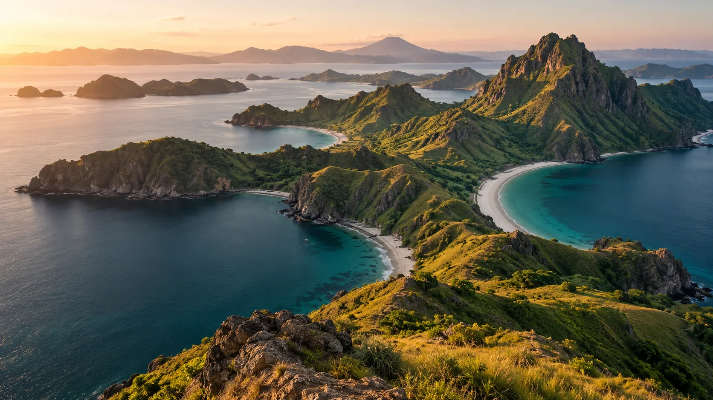
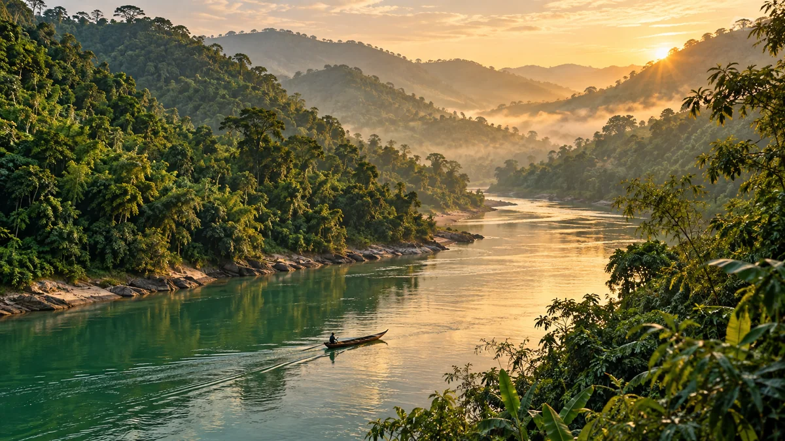
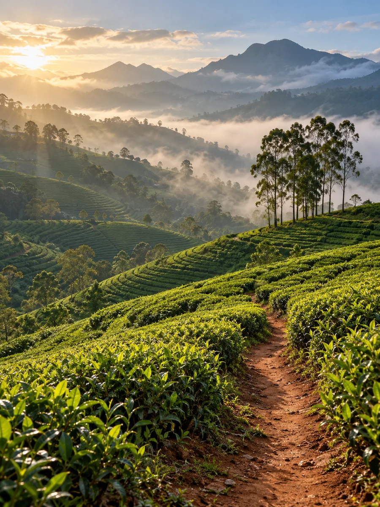

✳ For the places that stay with you
A WORLD
BEYOND
ORDINARY.
A different view. A deeper breath.
Go find the feeling you came for.
A different way to get away
DON'T JUST GO.
FEEL FAR AWAY.
The best journeys give you more than a change of scenery. A saltwater morning. A path with no hurry. A place that feels like a deep breath.
Find a little inspiration. Make it your own.
The GlobeTrek state of mind01 / The collection
FIND YOUR
SOMEWHERE.
From a turquoise kind of quiet
to a head-in-the-clouds adventure.
Your next chapter is out there.
A different direction?
No journeys match this combination. Try a different destination, experience, or length.

Follow the river.
Find your rhythm.
02 / Closer to home
WONDER
DOESN'T HAVE
TO BE FAR.
A river that takes its time. Hills that disappear into the morning. Sometimes the escape you're looking for is closer than you think.
03 / Your pace. Your place.
HOW DO YOU
WANT TO FEEL?
The destination is only the beginning.
Choose the kind of day you want to have.

A slower kind of beautiful.Sri Lanka, imagined.
LEAVE ROOM
FOR WONDER.THE GLOBETREK WAY
04 / The way we see it
LESS RUSH.
MORE REASONS
TO REMEMBER.
GlobeTrek is a starting point for your next great story. A collection of places, moods, and possibilities for people who want to feel a little more connected to the world.
Go with curiosity. Leave room for the unexpected.
Travel with intention. A thoughtful plan, at your own pace.
Keep the feeling. Collect the places that speak to you.
Every great story starts with a maybe.
WHERE
TO NEXT?
Pick your place. Set your pace.
Keep the idea.